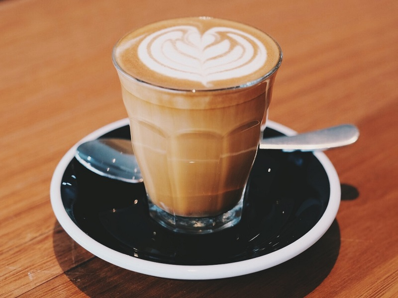
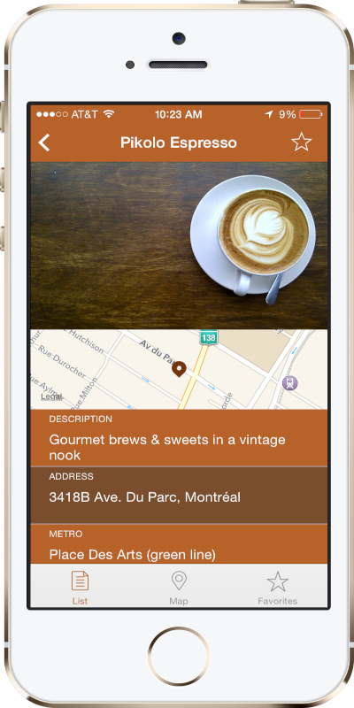

What you can expect to find if you come into store
The safety of our team members and customers is our number one priority and so we’ve made changes in our stores, which may look and feel a little different. Here's what you need to know.
Seating areas
From 17 May, all our indoor and outdoor seating areas will be available for customers to enjoy their favourite coffee in both our indoor and outdoor seating areas.
Takeaway orders
You'll need to look out for and follow these floor signs, both inside and outside of the store to ensure social distancing. You’ll be called up to the counter to order one customer at a time and our team will greet you from behind the screen.
Drive-Thru orders
Our Drive-Thru lanes are open as usual. You’ll notice we’ve installed a new extendable shelf, that enables our baristas to pass you your order with minimal to no contact. Keep an eye on our website and social pages for updates as to when they re-open.
Expressorders
You can now also enjoy your favourite Costa Express drinks without touching the machine’s screen. Order barista-quality coffee at our machines straight from your phone using our new contactless ordering feature.

A hug of joe app

1
Select our Pick Up & Go and experience the advantage of never waiting in line.
2
Select your desired coffee shop, browse the menu, customize your order and let the brewing begin.
3
Select from a variety of nearby coffee shops. Use the map for a better view of the closest coffee shops.